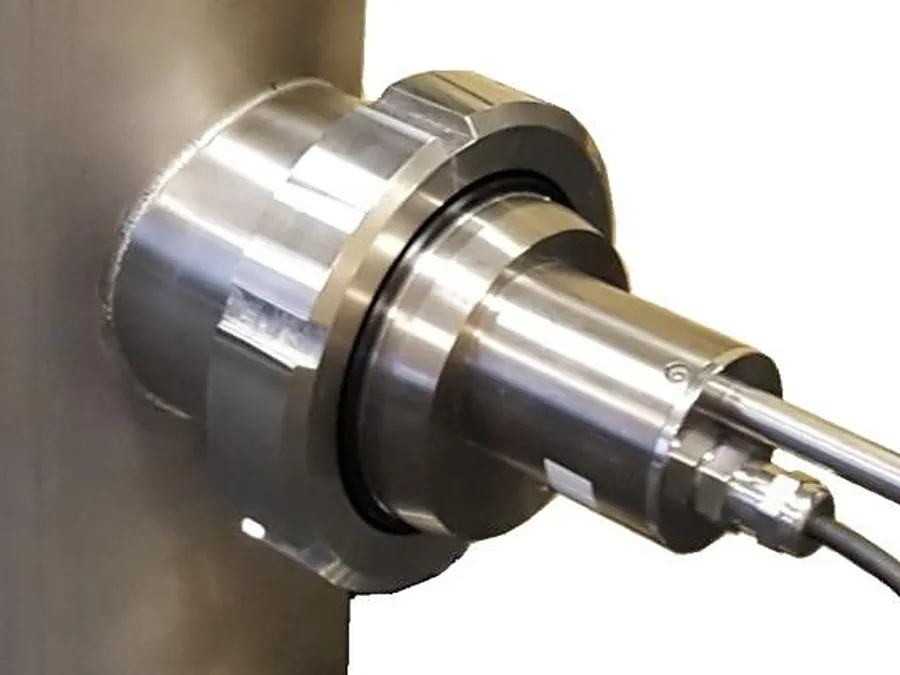

Hydrocarbures · Hydrocarbures
EnviroFluSonde de mesure des HAP et hydrocarbures dans l’eau
La concentration d’hydrocarbures dans l’eau, dissous ou surnageants, mesurée en continu. Sans prélèvement ni réactif : la sonde se plonge dans l’effluent et répond en moins de 10 secondes, en poste fixe, portable ou en station d’alerte.
- HAP
- 0 à 50 jusqu’à 0 à 5 000 µg/l
- Huiles
- 0 à 1,5 jusqu’à 0 à 150 mg/l
- Réponse
- 100 % en moins de 10 s
- Sortie
- 4-20 mA, 0-5 V
Idéal pour
- Stations d’alerte
- Eau potable
- Eaux usées
- Eaux de refroidissement
- Aéroports et raffineries
LeasingDisponible à l’achat ou en leasing, par mensualités. Comment ça marche
Points forts
Une mesure en temps réel, là où un prélèvement en laboratoire donnerait la réponse trop tard.
- Sans réactifNi prélèvement ni préparation : la sonde se plonge dans l’eau.
- Temps réel100 % de la valeur en moins de 10 s, mesure toutes les 5 s au plus.
- SélectiveFluorescence des HAP et des huiles minérales.
- Anti-encrassementRevêtement de la fenêtre de mesure qui allonge la période d’entretien.
- AutonomeUtilisable seule grâce à sa sortie 4-20 mA.
- Multiples montagesSuspendue, fixée, sur flotteur, en ligne ou en insertion.
Principe de mesure
Une lampe au xénon émet une lumière UV à 254 nm. Elle fait fluorescer certains composants des huiles minérales, en particulier les hydrocarbures aromatiques polycycliques (HAP).
La lumière émise par fluorescence, de longueur d’onde plus grande, est mesurée par une photodiode à 360 nm. Son intensité donne la concentration en HAP, exprimée aussi en équivalent huile.
- Deux versions : 0 à 500 µg/l et 0 à 5 000 µg/l de HAP
- Étalonnage et maintenance tous les 24 mois
- Corps inox ou titane, IP68
Applications
Pour la surveillance continue des hydrocarbures dans l’eau.
- Stations d’alerteDans une chambre de mesure en dérivation, pour déclencher une alarme.
- Eau potableSurveillance de la ressource et des prises d’eau.
- Eaux usées et rejets industrielsContrôle des effluents en continu.
- Aéroports, raffineries, pipelinesDétection des fuites d’hydrocarbures.
Caractéristiques
Deux gammes de mesure ; options d’installation.
| Principe | Fluorescence UV, lampe xénon 254 nm, détection 360 nm |
|---|---|
| Gamme HC 500 | HAP 0 à 50 ou 0 à 500 µg/l · huile 0 à 1,5 ou 0 à 15 mg/l |
| Gamme HC 5000 | HAP 0 à 500 ou 0 à 5 000 µg/l · huile 0 à 15 ou 0 à 150 mg/l |
| Précision | 0,3 µg/l (HC 500) · 0,5 µg/l (HC 5000) |
| Temps de réponse | 100 % en moins de 10 s |
| Intervalle de mesure | 5 s au plus |
| Corps | Inox ou titane, Ø 68 × 311 mm, 2,7 kg (inox) ou 1,9 kg (titane) |
|---|---|
| Protection | IP68 |
| Sorties | 4-20 mA, 0-5 V, RS232 |
| Alimentation | 12 à 24 Vdc, 3,5 W au maximum |
| Pression | 30 bar avec connecteur, 3 bar avec câble fixe |
| Température de l’eau | + 2 à + 40 °C |
| Entretien | Environ 0,5 h par mois ; étalonnage tous les 24 mois |
Fourniture
- Chambre de mesure en dérivation, ou montage sur piquage DN 80 ou DN 100
- Buse d’auto-nettoyage à l’air comprimé
- Cage de protection de l’optique
Téléchargements
Questions fréquentes
Les questions que nous posent le plus souvent les exploitants et les bureaux d’études.
Quels hydrocarbures la sonde mesure-t-elle ?
Les hydrocarbures aromatiques polycycliques (HAP) dissous ou surnageants, par leur fluorescence ; la mesure s’exprime aussi en équivalent huile minérale.
Faut-il des réactifs ou un prélèvement ?
Non. La sonde se plonge directement dans l’eau ou s’installe en dérivation ; la réponse est immédiate.
Quelle différence avec le LDI ROW ?
Le LDI ROW détecte sans contact un film d’hydrocarbure à la surface de l’eau. La sonde HAP mesure, dans l’eau, la concentration d’hydrocarbures dissous ou surnageants.
Quel entretien prévoir ?
Environ une demi-heure par mois, et un étalonnage tous les 24 mois. Une buse d’auto-nettoyage à l’air comprimé est disponible en option.